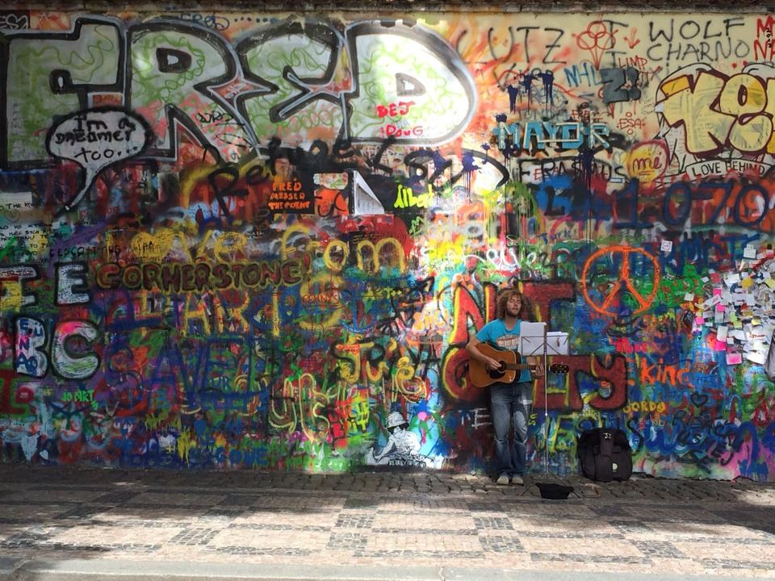

Lennon fal (Lennonova zeď)
A Lennon falnál a legfontosabb első benyomás a felületek sűrűsége. Színek, arcok, rövid üzenetek és egymásra került nyomok töltik meg a falat. Ez a látvány nem egyetlen művész egyszeri kompozíciója. Hosszú idő alatt kialakult, újra és újra átértelmezett városi emlékhelyről van szó.
John Lennon 1980-as halála után a fal környékén a zenészhez kapcsolódó emlékező képek és feliratok jelentek meg. A Beatles zenéje és Lennon békeüzenete sokak számára a szabadabb világ képét jelentette. Az államszocializmus éveiben az ilyen megszólalások politikai jelentést is kaphattak. Egy falra írt mondat így jóval többet hordozhatott egyszerű rajongói gesztusnál.
A feliratokat időnként eltüntették, majd újabbak jelentek meg helyettük. Ettől a fal a megújuló megszólalás jelképévé vált. A történetben nem a változatlan felület, hanem éppen az ismételt visszatérés lett fontos. A ma látható képet ezért nem szabad a nyolcvanas évek érintetlen állapotának tekintenünk.
Álljunk meg kissé távolabb, és figyeljük meg, hogyan rendeződik össze a sok külön részlet. Utána válasszunk egyetlen feliratot vagy arcot, amely közelebb hív. A teljes felület és az apró jel közötti váltás itt különösen erős. A fal egyszerre tud tömeges közös üzenet és nagyon személyes megszólalás lenni.
A hely látogatása nem jelenti automatikusan azt, hogy szabadon új feliratot készíthetünk. A tulajdonos és az üzemeltetés szabályai idővel változtak, a felületet szervezett művészeti programok is alakítják. A megőrzés és a megújulás közötti egyensúly ma is része a történetének. A legjobb, ha a falat először figyelmes nézőként közelítjük meg.
A környező tér és a közeli kisoldali utcák csendje érdekes hátteret ad a színes felületnek. Ha a fénykép után még néhány percet maradunk, a hely kevésbé puszta turistajelképként hat. A zenéről, a szabadságvágyról és a megszólalás lehetőségéről szóló történet személyesebbé válhat. Innen továbbindulva a történelmi város már a közelmúlt emlékeivel is gazdagabb lesz.
50.086148, 14.406607